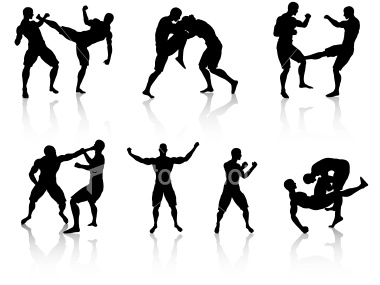

Martial Arts were believed and i stress the word "Believed" to have originated in the Far East. So little is know about Human history that one should never assume how one thinks on such a subject. Particularly the martial arts as some forms require a particular training in the mind, body and spirit whose origins can sometime border on the bizarre.That been said china is sometimes accepted as the origin of martial arts probably 1000 to 3000 Bc.(Although if sometime told me over a pint that they could have originated in Lemuria fifty thousand years previously, from teachers not necessarily human or of this world or domain i would not bat a eyelid, but that would be an appendix !?)
Various systems of kung fu, self defence and boxing originated in China which spread to Japan , philipines, Russia, India and almost all of Asia developing their own systems and styles. In europe it was primarily Boxing and wrestling which were almost as old. These systems have spread and intermingled to what we have today.